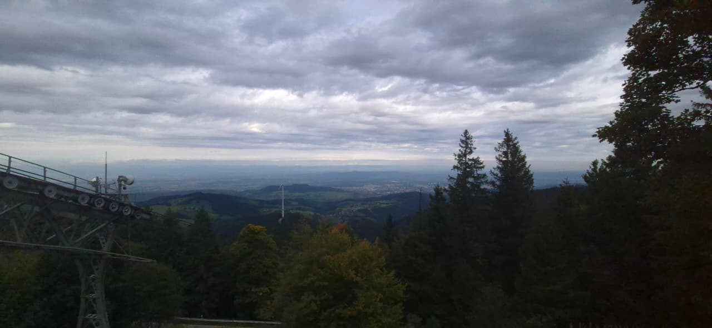
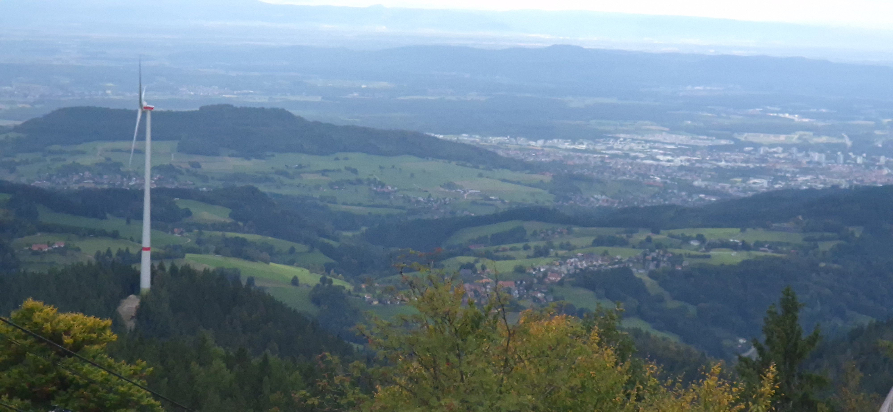

Ich bin am 6. September nach Deutschland aufgebrochen; die erste Flugverbindung war in Paramaribo. Zwischen Belém und Suriname lag der Urwald, ich war am Fenster. Die Landschaft schien mir zugleich sublim und traurig. Da waren Bäume, ein ganzes Meer davon, unterbrochen von häufiger Lichtungen, die nicht von der Natur geschaffen worden waren. Blickt man in einer dieser Lichtungen, sieht man entweder so einen trocknen Boden, dass das Blicken weh tut, oder einen viskosen, leicht goldnen Schlamm. Ein Mann neben mir bemerkt es: „Você viu as queimadas?".
„[...] er sah, sah eine Landschaft, ein tropisches Sumpfgebiet unter dickdunstigem Himmel, feucht, üppig und ungeheuer, eine Art Urweltwildnis aus Inseln, Morästen und Schlamm führenden Wasserarmen, - sah aus geilem Farrengewucher, aus Gründen von fettem, gequollenem und abenteuerlich blühendem Pflanzenwerk haarige Palmenschäfte nah und ferne emporstreben, sah wunderlich ungestalte Bäume ihre Wurzeln durch die Luft in den Boden, in strockende, grünschattig spiegelnde Fluten versenken, wo zwischen schwimmenden Blümen, die milchweiß und groß wie Schüsseln waren, Vögel von fremder Art, hochschultrig, mit unförmigen Schnäbeln, im Seichten standen und unbeweglich zur Seite blickten, sah zwischen den knotigen Rohrstämmen des Bambusdickichts die Lichter eines kauernden Tigers funkeln - und fühlte sein Herz pochen vor Entsetzen und rätselhaften Verlangen."
Werner Herzog hat Amazonas so beschreibt: „Ein Gebiet, das Gott, wenn er existiert, im Zorn geschöpft hat". Auch die ersten Eroberer und Naturforscher, als sie erstmals Amazonas prüften, haben den Urwald als eine „grüne Hölle" bezeichnet.
Wie ich es sehe, ist der Wald wütend. Der Fluss ist vor allem zornig. Die Pororoca, was könnte sie sein, wenn nicht ein Schlachtruf? Ein Schmerzensschrei vielleicht?
"19 de Maio
"[...] A foz do Amazonas é uma dessas grandezas tão grandiosas que ultrapassam as percepções fisiológicas do homem. Nós só podemos monumentalizá-las na inteligência. O que a retina bota na consciência é apenas um mundo de águas sujas e um matinho sempre igual no longe mal percebido das ilhas. O Amazonas prova decisivamente que a monotonia é um dos elementos mais grandiosos do sublime. É incontestável que Dante e o Amazonas são igualmente monótonos. [...]”
— Mário de Andrade, O Turista Aprendiz
Drei Tage nach meiner Anreise habe ich zusammen mit zwei Kolleginnen ein Stadttour durch Freiburg gemacht. Unserer Stadtführer hat uns alles über die Geschichte seit der Zähringer-Zeit erzählt. Wie Vauban eine Krone um die Stadt gebaut hatte, wie die Habsburger sie zerstört haben. Ich habe auch die traurige Geschichten des Krieges überall erfährt. Diese war eine Stadt, die mehr als einmal zerstört wurde, und ich würde es nicht ahnen, wenn man mir nichts erzählt hätte. Der Mensch ist sowohl ein schrecklicher Vernichter als auch ein hochbegabter Wiederaufbauer. Er muss die beiden Tatsachen immer im Gedächtnis bewahren.
Der Stadtführer hat uns endlich zum Freiburger Münster angeleitet. Der leere, gebohrte Turm hat mich erstaunt. Wie ein dornenreiches und trotzdem handgemachtes Pflanzenwerk. Er war einem Tannenbaum sehr ähnlich. Es wurde gefragt, wie wir das Münster funden. Meine Antwort: "komplex".
Aber ein Münster ist, wie Gott, unendlich einfach.
In Straßburg habe ich ein anderes gesehen, das Liebfrauenmünster, Notre-Dame-de-Strasbourg. Das Glaswerk beleuchtet die innere Nacht einem bunten Mond gleich. Die Säulen erwecken den genauen Eindruck, den Rodin erwähnt hat: als ob man unter winterlichen Bäumen sich befände. Es fühlt sich an, als hätte ich mich in der Nacht unter diesen Bäumen aus Stein verlaufen.
Alle meine Bestrebungen werden auf einmal sinnlos, engherzig. So ein Gefühl erfuhr ich nur als Kind, als ich den Sumaúma erstmals sah.

In dieser Stadt, die in der Nähe des Schwarzwaldes liegt, ist die Natur nicht so ungeheuer wie in Belém. Dass ich im Herbst angekommen bin, trägt dazu bei. Es sind hier Kinder, wie ich damals war, und sie spielen unter den Bäumen im Park. Der Wind ist schon ziemlich kalt und ich wundere mich, ob sie beim Rennen die Kälte nicht fühlen. Im Herbst die Kastanienbäume lassen ihre Früchte frei und sie sammeln sie auf. Einmal pro Jahr können sie die Kastanien gegen Haribobären tauschen. Jedoch dieses Jahr wurde die Kastanienaktion wegen eines Virus abgesagt.
A VIAGEM PARA O NOVO PAÍS
[...]
E poderemos caminhar como crianças sobre a relva fria
Diante dos ventos e das tempestades.
Das letzte Andenken meiner Reise kommt aus Staufen. Dort, in einem Hotelzimmer, ist der echte Doktor Faust nach einem Versuch, Gold herzustellen, gestorben. Er hatte vermutlich einen Pakt mit dem Teufel absgeschlossen. Er war nicht der erste Goldsucher und wäre auch nicht der letzte. Was für einen Unterschied zwischen Faust und Antonius, der Große, dessen Bild ich im Augustinermuseum gesehen habe und den man auf Portugiesisch "Antão" heißt. Er wurde vom Teufel mit einem Haufen Gold verlockt und wurde nicht bezwungen. Die beiden Männer werden mit einem Chor von Dämonen dargestellt.
Wir sind heraufgestiegen, um die Burgruinen zu schauen. Für denen, die aus einem wässrigen Flachland kommen, ist der windige Berg (d.h. jede Unebenheit) eine Unnatürlichkeit.
Ich bin endlich zum Spitz angekommen und habe mich niedergesessen. Neben mir war eine nette alte Frau aus Saarland, die nach Brasilien reisen wollte.
Gegen das Ende unseres Plaudern sagt sie: „Goethe hat gesagt, man reist nicht, um anzukommen, sondern um unterwegs zu sein."
Nach ein paar Tagen steige ich einen anderen Berg, diesmal durch die Seilbahn. Die Natur scheint mir jetzt geheimnisvoll, obwohl nicht weniger bequem. Schwarze Böcke grasen ab, ihre Glocken klingen. Ich schaue, während eine Biene versucht, auf meinem Glas zu landen. Und damit nehme ich Abschied von Deutschland.
 
Ich nehme den Bus zum Flughafen, bevor der Tag beginnt. Auf dem Weg werde ich von der Stickstofffabrik in Ottmarsheim begrüßt. Die Wolken sind nicht vom Rauch zu unterscheiden. Türme und Hortonsphären glänzen wie Sterne in der Nacht. All das erinnert mich seltsamerweise an das Münster.
In Belém findet die Klimakonferenz statt. Ich nutze die freie Tage, um die Stadt erneut zu sehen. Was mir am besten gefällt, ist die Sebastião Salgado-Ausstellung. Indem ich jedes Photo von Monte Roraima betrachte, kommen mir die Geschichten über die Taten von Macunaíma vor. Man sieht den Nebel über dem Fluss, der auch Fluss ist. Alles ist so eintönig. Der Zorn jener Götter ist verstehbar - der war aus Langeweile. Aus Langeweile hatte Macunaíma die Landschaft von Monte Roraima geschafft. Und sobald seine Brüder den fruchtbaren Weltbaum während der Hungerzeit gefunden haben, hat er (oder Ma'anápe) den Baum abgehauen.

„Makunaíma ging dann auf die andere Seite des Roroíma und lebt dort wohl noch heute. Er verwandelte dort Männer und Frauen in Felsen, ebenso Saúbas, Tapire und Wildschweine. Ein Fels nahe bei Koimélemong ist ein Schwein, das den Kopf in die Erde steckt. An dem Gebirge Aruayáng findet sich ein groBer Topf, iiber den eine Korbwanne gestülpt ist; bei der Serra do Mel eine in Stein verwandelte Jagdtasche. Sehr viele dieser Steine finden sich im Lande der Engländer, z. B. Fische, eine Frau mit flacher Korbwanne auf dem Kopf usw."
„Da sagte Ma'anápe, der Verfluchte, zu seinem Bruder: „Morgen wollen wir den Baum umhauen!" Akuli, der sehr klug war und alles vorher wuBte, sagte: „Nein, wir wollen ihn nicht umhauen! Wir wollen nur Früchte holen! Wenn du den Baum umhaust, gibt es ein groBes Wasser!" Aber Ma'anápe war störrisch, nahm eine Axt und hieb in den Stamm des Baumes, indem er zu ihm sagte: „mapaza-yég elupa-yég makúpa-yég palúlu-yeg!" Da wurde das Holz immer weicher, und die Axt drang immer weiter ein. Akuli warnte noch immer: „Schlag ihn nicht um! Schlag ihn nicht um! Sonst kommt viel Wasser!" Er nahm alle Fruchtschalen und Bienenwachs und verstopfte sofort alle Löcher, die Ma'anápe schlug. Ma'anápe hieb immer weiter. Als er „palúlu-yeg" sagte, wurde der Stamm ganz weich, und die Axt drang tief ein. Es blieb nur ein Stuck vom Stamm übrig. Da sagte der andere Bruder Anzikilan: „waína-yeg!" Da blieb das andere Stuck des Stammes ganz hart, und die Axt kam nicht weiter. Aber Ma'anápe sagte wieder: „elupa-yég makúpa-yég palúlu-yeg!" Da wurde der Stamm wieder ganz weich, und er schlug den Baum um."
Die Konferenz ist vorbei und man erreicht keinen Kompromiss. Einige sind hierher gekommen und haben gesagt, dass sie alles höllisch langweilig gefunden haben. Die Welt stirbt aus Langeweile. Palúlu-yeg!